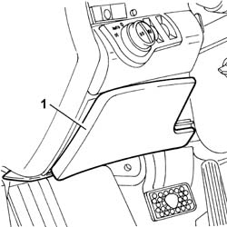
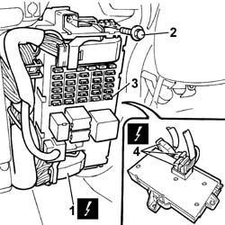
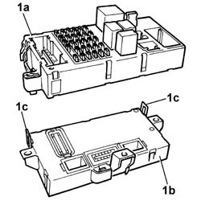
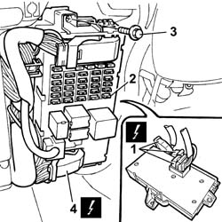

5505A10 Junction UNIT - R.R.
- Path
- Procedures > 55 ELECTRICAL EQUIPMENT > 5505 INSTRUMENT/GAUGE ELECTRICAL CIRCUITS > 5505A multi-function components > 5505A10 Junction UNIT - R.R.
- Kind
- repair procedure (removal / refitting; the operation number is the code)
- Applies to
- all engines; all production periods
- Interactive page
- https://sloeber94.github.io/elrnDB-lThss/en/#/79340
Applies to: all engines; all production periods
 Removing
Removing
 Refitting
Refitting- Disconnect the negative battery terminal.
1. Remove the fuse access cover.

Applies to: all engines; all production periods
1. Disconnect the front electrical connectors for the junction unti complete with body computer.
2. Undo the fixing bolts.
3. Remove the junction unit complete with body computer from the housing.
 | Description | Connector |
|---|---|---|
1 | Junction unit under dashboard | B002A |
| Description | Connector |
|---|---|---|
1 | Junction unit under dashboard | B002B |
| Description | Connector |
|---|---|---|
1 | Junction unit under dashboard | B002D |
4. Disconnect the rear electrical connectors for the junction unti complete with body computer.
| Description | Connector |
|---|---|---|
4 | Junction unit under dashboard | B002F |
| Description | Connector |
|---|---|---|
4 | Junction unit under dashboard | B002G |
| Description | Connector |
|---|---|---|
4 | Junction unit under dashboard | B002H |

Applies to: all engines; all production periods
1. At the bench, separate the junction unit (1a) from the body computer (1b) acting on the retaining springs (1c).

Applies to: all engines; all production periods
Refitting
Removing- Assemble the junction unit and the body computer, until the click of the retaining springs is heard.
1. Connect the rear electrical connectors for the junction unti complete with body computer.
| Description | Connector |
|---|---|---|
1 | Junction unit under dashboard | B002F |
| Description | Connector |
|---|---|---|
1 | Junction unit under dashboard | B002G |
| Description | Connector |
|---|---|---|
1 | Junction unit under dashboard | B002H |
2. Fit the junction unit complete with body computer in the housing.
3. Tighten the fixing bolts.
4. Connect the front electrical connectors for the junction unti complete with body computer.
| Description | Connector |
|---|---|---|
4 | Junction unit under dashboard | B002A |
| Description | Connector |
|---|---|---|
4 | Junction unit under dashboard | B002B |
| Description | Connector |
|---|---|---|
4 | Junction unit under dashboard | B002D |

Applies to: all engines; all production periods
- Fit the fuse access cover.
- Connect the negative battery terminal.
Topics that link to this page (17)
- I02 PARKING LIGHTS NOT WORKING
- I04 SIDE LIGHTS / NO. PLATE LIGHT AND DIPPED HEADLAMPS NOT WORKING IN AUTO MODE
- I05 DIPPED HEADLAMPS NOT WORKING
- I07 RIGHT/LEFT DIPPED HEADLAMP (ONE) NOT WORKING
- I14 BRAKE LIGHTS AND THIRD BRAKE LIGHT NOT WORKING
- I15 (SIDE) BRAKE LIGHTS NOT WORKING
- I16 CENTRE BRAKE LIGHT (THIRD BRAKE LIGHT) NOT WORKING
- I17 REVERSING LIGHTS NOT WORKING
- I33 LEFT OR RIGHT REVERSING LIGHT (ONE) NOT WORKING
- I34 REVERSING LIGHTS (TWO) ON CONSTANTLY
- I48 FRONT INTERIOR LIGHTS NOT WORKING
- I80 HEADLAMP ALIGNMENT CORRECTOR NOT WORKING
- N01 CIGAR LIGHTER/CURRENT SOCKET NOT WORKING
- N02 ADDITIONAL CURRENT SOCKETS NOT WORKING
- N29 INFO TELEMATIC NODE NOT WORKING
- 5505A32 BODY COMPUTER - R.R.
- 5560B11 ANALOGUE CONTROL PANEL - R.R. or Replace